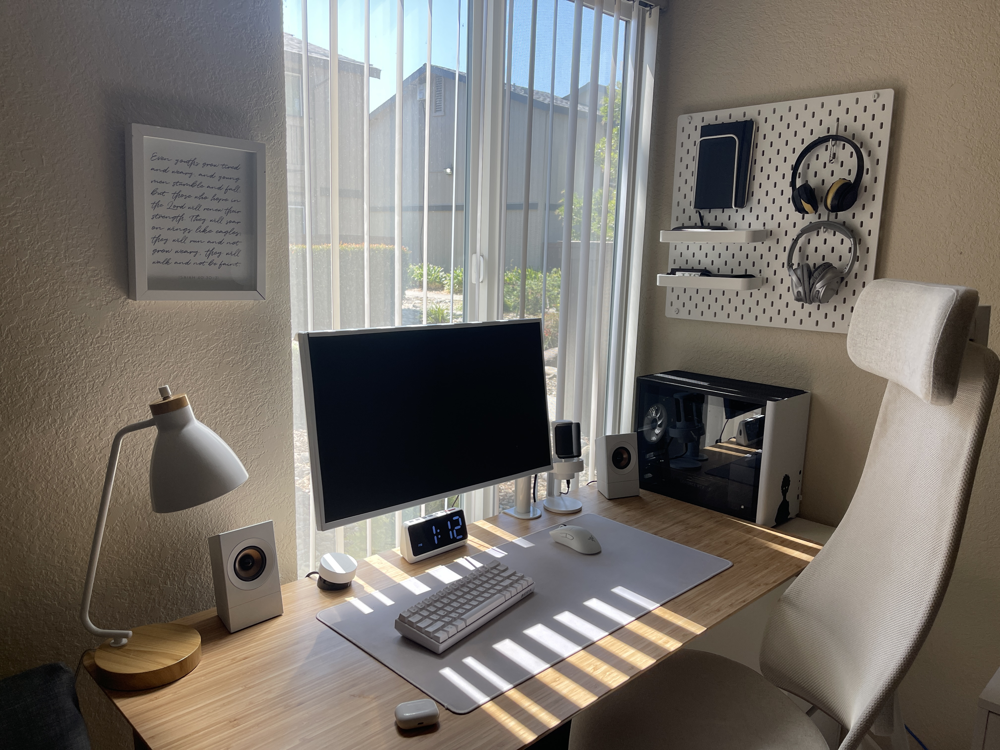

The Beginning

My first computer was this Acer laptop my parents got me in middle school. Nothing fancy, but it got me through six years of homework, games, and way too much YouTube.
First Desktop Setup

My first ever custom build. I built it for gaming, but honestly I fell in love with the building process itself. This box ended up being our family PC for a while!
First Bedroom Setup

This was the first pc desk setup that I could call my own! The inwin A1 plus case was an amazing find!
RGB Overload

Like every kid on the internet, I dreamed of one of those wild RGB setups I saw on the internet. It scratched that itch in my brain, but i quickly realized this was not for me.
Minimalism

Not even a month after the last setup, I grew tired of all the colors and clutter and wanted a cleaner workspace. This time, I wanted comfort and cleanliness. I also wanted to go back to the itx form factor. Was getting frustrated with my desk's color and size.
Back to Basics

Around this time, I was moving off to college. I wanted a completly fresh start so I sold off everything and bought a simple macbook air. I ended up regretting this decision for so many reasons. :C
College :C

My first dorm setup. I had to start over from scratch, so most of this came from Craigslist finds and budget parts. Even though it wasn’t pretty, it got the job done and actually taught me a lot about making the most of what I had. The macbook air ended up being useless as it was too slow to load more than 2 tabs and couldnt handle any of the programs I needed for my classes.
A Real Desk!

Finally got access to IKEA and joined the club: Alex drawers + kitchen countertop desk combo. Added a pegboard and suddenly it looked way more like the pictures I saw on pinterest. Clean, simple, and for the first time, I felt like my setup looked how I wanted it to.
Challenge Setup

At some point, I realized my setup had gotten a little too expensive for comfort. I started feeling guilty about how much money I was pouring into it, so I wanted to reset. I went back to my roots and challenged myself: could I take everything I’d learned and still build a clean, functional setup on a tiny 300$ budget? The answer was yes.
Challenge Setup V2

After some more designing and deal-hunting...This was the end result of the challenge setup. I ended up making a youtube video on this!
Mama Bear

Unfortunately, old habits die hard, and I ended up missing the creature comforts. Went all out again and this was the result. Started drifting to a techy all white aesthetic.
The Cottage...?

When I went back home, I wanted to build the room I had always dreamed of and redid my entire childhood room. It turned out spotless and high techy, like something out of an ikea showroom. But that was the problem, it felt like an office, not my bedroom. It was missing any sense of familiarity or coziness
Baby Bear

So when I got back to school, I decided to go the opposite direction and chase pure coziness. Small laptop setup, warm lights, super homey vibes. It was a comfy! But it was also too much. I ended up missing all the ergonomics and "flow" that the officey setups had.
Papa Bear

The budget challenge was grounding, but after the cozy experiment I swung back to the other extreme, just to double check. This was a highly productive, monochrome setup. Black and white everything, crisp and professional. I even hunted for a marble desk to complete the vibe (no luck). It looked good, but it still felt like the last two.
Goldilocks
By this point I had experimented enough to figure out what really worked for me. Instead of going to extremes, I found a balance between cozy and productive. The setup was not too big or too small, and it finally felt like something that reflected me the most.